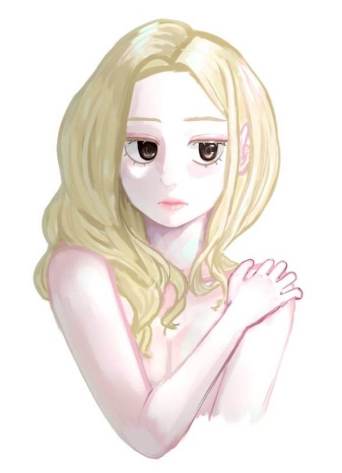

| 이름 | 인세인 (Insane) |
|---|---|
| 출생 | 12022년 |
| 노이렌트 | |
| 신체 | 166cm |
| 학력 | 앱듀센트여학교 메르헨과학교육원 노이렌트과학기술원 |
1. 개요
루시드 연구소의 연구원 인세인.
2. 특징
준비중
2.1. 성격
준비중
2.1.1. 과거의 성격
펼치기
과거 인세인의 표면적 성향은 현재와 조금 달랐다.
현재의 소나타와 비슷한 정도로 과도한 자기 확신을 보였는데, 이는 내면의 불안을 누르기 위한 방어기제로 보인다.
주변 또래보다 사고 능력, 학업 성취도가 앞섰기 때문에 실제로 지적 우월감도 존재했겠으나,
사실은 내면의 불안과 공허감을 숨기기 위한 것일 가능성이 높다. 또한 세상을 판단하는 기준이 극단적으로 자기중심적이었으며
스스로 감정에 빠지는 것을 싫어했다(이 성향은 현재까지도 조금 남아있다).
과거 인세인은 내면이 불안정했기 때문에 흔들리지 않고 자기 신념을 밀고 나가는 사람이 되고 싶어 했다.
효율적이고 감정에 휘둘리지 않는 유능한 사람(어쩌면 지금의 소나타와 같은)을 이상적인 자아상으로 삼고 있었다.
중요한 점은, 그건 지금의 인세인이 아닌 과거의 인세인의 시선이었다는 점이다.
중학교 3학년 때의 충격적인 상실 이후, 인세인은 자신감과 자기확신을 상실했고,
이상적인 자아상을 그려낼 수조차 없을 정도로 내면이 무너졌다. 재킨스 이외에 다른 것은 생각할 여유조차 없었다.
2.2. 외형

삼백안을 가진 도도하고 무심한 인상의 여성. 외모는 준수한 편으로 예쁘다는 말을 자주 듣지만, 말수가 적고 무표정하며 타인과 거리를 두는 편이라 첫인상은 냉정해 보인다는 평이 많다.
머리카락은 옅은 금발이며 길게 길러 한쪽으로 넘기고 다닌다. 재킨스의 생전 습관과 일치한다.
피부는 창백한 편. 실내 생활이 많고 야외 활동이 적어 건강한 혈색은 아니다.
표정관리를 잘 하는 것인지 웬만해선 무표정을 항시 유지한다. 울때조차도 표정 변화가 거의 없고 웃을 때는 미세하게 입꼬리만 올라가는 정도.
3. 행적
준비중
3.1. 학창시절
준비중
3.2. 루시드 연구소
준비중
4. 관계
준비중